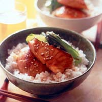

Teriaki Salmon

Description
A simple recipe consisting of a marinated piece
of salmon resting on a bed of rice with a side
of stir-fried vegetables of your choice.
The teriyaki marinade for the salmon is the typical
holy trinity spiel with soysauce, mirin, and sake.
Ingredients
- Salmon
- Soysauce
- Sake
- Mirin
- Rice
- A vegetable of your choice
Steps
- prepare the marinade in a small bowl
- 2 TS soysauce
- 2 TS mirin
- 2 TS sake
- add a dash of sesame oil if you like
- place your filet of salmon in the marinade -at least 30min
- rince short grained rice and cook in a rice cooker or god forbid a small pot
- pour a bit of oil in a medium hot pan and place the salmon skin down
- after 80% cooked through, flip the salmon and pour the marinade in the pan
- whilst the salmon is cookin, get another pan on high heat with some oil and stir fry the vegateble of your choice
- remove the salmon from the pan and place it on a fresh bowl of rice
- thicken the marinade in the pan with the starch of your choice like flour
- after getting it to the right consistency, pour it over the salmon
- garnish with the stir-fried vegetables